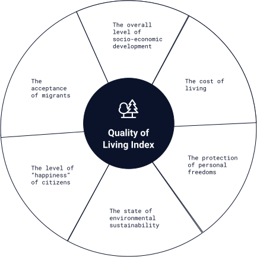

<section class="methodology-quality">
  <div class="container section-wrapper">
    <div class="section-header">
      <h2 class="section-title">Quality of Living Index</h2>
      
    </div>
    <div class="section-content">
      <p class="section-text">
        The final dimension of the Global Passport Index aims to capture a
        number of facets related to the overall “quality of life” in different
        jurisdictions. The focus is on aspects that increase the
        “attractiveness” of countries as a permanent/primary place of residence
        for different types of global citizens including retirees, but also
        expats, digital nomads, and others seeking desirable living conditions
        abroad. A number of thematic areas were prioritized and research was
        undertaken to identify reliable data sources with as comprehensive
        country coverage as possible. 6 main components are included in this
        dimension
      </p>
      <div></div>
      
    </div>
  </div>
</section>
